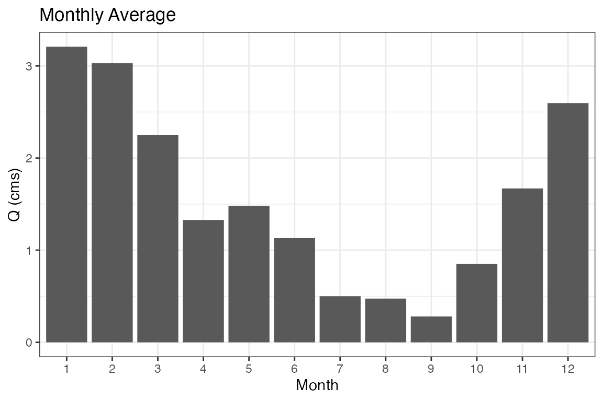
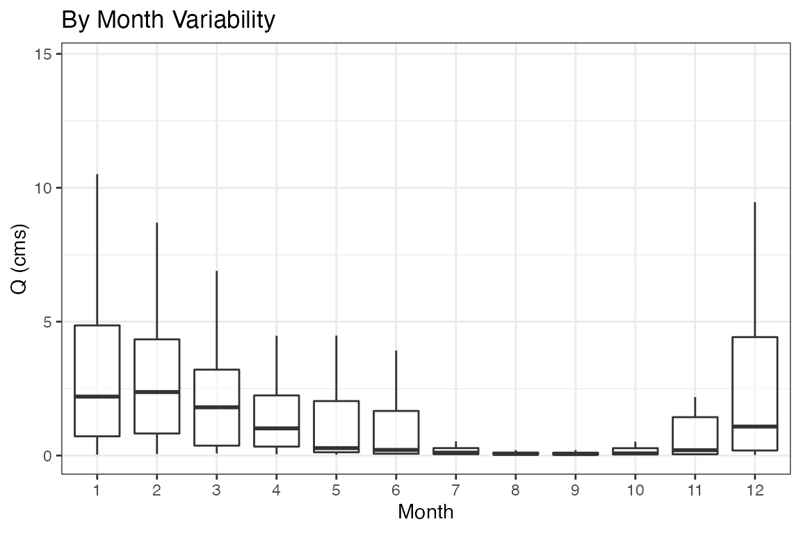
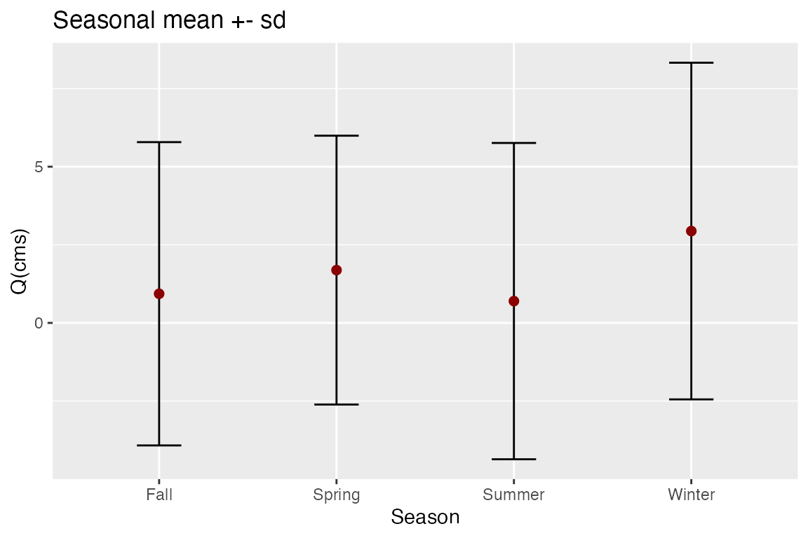
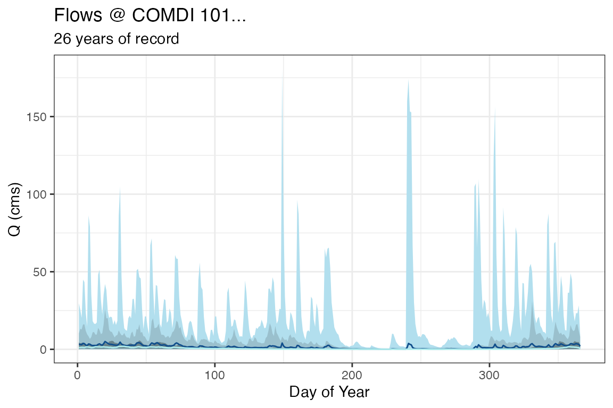

Raw historic data comes in hourly time intervals. For many analyses, different time aggregates are needed (e.g. by year, by-month …). To ease repetative tasks, the nwmTools provides a split_time function and a family of aggregate_* functions.
split_time in breaks the hourly dateTime into base temporal units. In addition to the basic year, month, day, and hour, the season, water year, and Day-of-Water Year (DOWY) are added:
# Get 5-years of data and split the time attribute
st = readNWMdata(comid = 101,
startDate = "2005-01-01",
endDate = "2009-12-31") |>
split_time("dateTime")
glimpse(st)
#> Rows: 43,824
#> Columns: 11
#> $ comid <dbl> 101, 101, 101, 101, 101, 101, 101, 101, 101, 101, 101, 1…
#> $ dateTime <dttm> 2005-01-01 00:00:00, 2005-01-01 01:00:00, 2005-01-01 02…
#> $ flow_cms_v2.1 <dbl> 2.23, 2.23, 2.22, 2.21, 2.19, 2.18, 2.18, 2.18, 2.17, 2.…
#> $ year <dbl> 2005, 2005, 2005, 2005, 2005, 2005, 2005, 2005, 2005, 20…
#> $ month <dbl> 1, 1, 1, 1, 1, 1, 1, 1, 1, 1, 1, 1, 1, 1, 1, 1, 1, 1, 1,…
#> $ day <int> 1, 1, 1, 1, 1, 1, 1, 1, 1, 1, 1, 1, 1, 1, 1, 1, 1, 1, 1,…
#> $ hour <int> 0, 1, 2, 3, 4, 5, 6, 7, 8, 9, 10, 11, 12, 13, 14, 15, 16…
#> $ season <chr> "Winter", "Winter", "Winter", "Winter", "Winter", "Winte…
#> $ wy <dbl> 2005, 2005, 2005, 2005, 2005, 2005, 2005, 2005, 2005, 20…
#> $ julian <dbl> 1, 1, 1, 1, 1, 1, 1, 1, 1, 1, 1, 1, 1, 1, 1, 1, 1, 1, 1,…
#> $ DOWY <dbl> 93, 93, 93, 93, 93, 93, 93, 93, 93, 93, 93, 93, 93, 93, …Using the split time attributes, we can plot the hourly flow records by julien day, grouped by water-year:
ggplot(data = st, aes(x = DOWY, y = flow_cms_v2.1, color = flow_cms_v2.1)) +
geom_line(size = 1) +
facet_grid(wy~.) +
labs(y= "Daily Flow (cms)", x= "Day of Water Year",
title="Daily Discharge for COMID 101") +
scale_color_viridis_c() +
theme_minimal()
Often you might want to split and summarize your data, for example “average monthly flow” or “median annual flow”.
For these tasks, a family of aggregation methods allow users to define an temporal unit via the function name, and pass summarizing function(s) as parameters. Function names follow the pattern of aggregate_* where * represents the common date (and hydro-specific) symbols seen below.
| Symbol | Aggregate |
|---|---|
| y | year |
| m | month |
| d | day of moth |
| doy | day of year |
| j | Julian day |
| s | season |
| wy | water year |
| dowy | day of water year |
These symbols can be combined to provide useful, common aggregation patterns, 14 of these are included the package (some are shown below):
| Aggregate Unit Symbol | Description |
|---|---|
| *_record | Entire Record |
| *_y | Year |
| *_m | Month |
| *_j | Julian Day |
| *_s | season |
| *_wy | Water Year |
| *_ym | Year and Month |
| *_yj | Year and Julian day |
| *_ymd | Day of the Year |
| *_ys | Year and Season |
| *_wym | Water Year and Month |
| *_wymd | Julian Day of the Water Year |
| *_wys | Water Year and Season |
| *_dowy | Day of Water Year |
First lets grab some data for a COMID near Baton Rouge, LA along the Mississippi.
flows = readNWMdata(comid = 101)
glimpse(flows)
#> Rows: 367,375
#> Columns: 3
#> $ comid <dbl> 101, 101, 101, 101, 101, 101, 101, 101, 101, 101, 101, 1…
#> $ dateTime <dttm> 1979-02-02 18:00:00, 1979-02-02 19:00:00, 1979-02-02 20…
#> $ flow_cms_v2.1 <dbl> 3.02, 2.95, 2.89, 2.83, 2.79, 2.74, 2.70, 2.67, 2.63, 2.…Using the flow data grabbed above, we might be interested in seeing the monthly mean flow rates. We can do this by passing the flow records to aggregate_m (m = month) and using mean as the function:
# Aggregate hourly flows to monthly averages by year
monthly = aggregate_m(flows, fun = mean)
glimpse(monthly)
#> Rows: 12
#> Columns: 4
#> $ comid <dbl> 101, 101, 101, 101, 101, 101, 101, 101, 101, 101, 101, 1…
#> $ month <dbl> 1, 2, 3, 4, 5, 6, 7, 8, 9, 10, 11, 12
#> $ flow_cms_v2.1 <dbl> 3.2080422, 3.0293795, 2.2485403, 1.3277797, 1.4821377, 1…
#> $ obs <dbl> 30504, 28446, 31248, 30240, 31248, 30240, 31248, 31248, …
ggplot(data = monthly) +
geom_col(aes(x = factor(month), y = flow_cms_v2.1)) +
labs(x = "Month", y = "Q (cms)",
title = 'Monthly Average') +
theme_bw()
Alternatively we might be interested in the monthly variability in each year. We can do this by passing the flow records to aggregate_ym (ym = year,month) and using mean as the summarizing function:
# Aggregate hourly flows to monthly averages by year
ym = aggregate_ym(flows, fun = mean)
glimpse(ym)
#> Rows: 503
#> Columns: 6
#> $ comid <dbl> 101, 101, 101, 101, 101, 101, 101, 101, 101, 101, 101, 1…
#> $ year <dbl> 1979, 1979, 1979, 1979, 1979, 1979, 1979, 1979, 1979, 19…
#> $ month <dbl> 2, 3, 4, 5, 6, 7, 8, 9, 10, 11, 12, 1, 2, 3, 4, 5, 6, 7,…
#> $ flow_cms_v2.1 <dbl> 5.27406337, 3.95766120, 3.80990269, 1.78446233, 3.922749…
#> $ obs <dbl> 630, 744, 720, 744, 720, 744, 744, 720, 744, 720, 744, 7…
#> $ ym <date> 1979-02-01, 1979-03-01, 1979-04-01, 1979-05-01, 1979-06…
ggplot(data = ym, aes(x = factor(month), y = flow_cms_v2.1)) +
geom_boxplot(alpha = .5, outlier.shape = NA) +
labs(x = "Month", y = "Q (cms)",
title = 'By Month Variability') +
theme_bw()
So far we have only looked at passing mean to aggregate_* but multiple functions can also be passed as a vector. The following returns the seasonal (s) mean and standard deviation.
# Aggregate by season
seasons = aggregate_s(flows, fun = c('mean', 'sd'))
glimpse(seasons)
#> Rows: 4
#> Columns: 6
#> $ comid <dbl> 101, 101, 101, 101
#> $ season <chr> "Fall", "Spring", "Summer", "Winter"
#> $ flow_cms_v2.1_mean <dbl> 0.9324036, 1.6900479, 0.6976414, 2.9400717
#> $ obs_mean <dbl> 91728, 92736, 92736, 90175
#> $ flow_cms_v2.1_sd <dbl> 4.854523, 4.302834, 5.062546, 5.388558
#> $ obs_sd <dbl> 0, 0, 0, 0
ggplot(data = seasons, aes(x = season, y = flow_cms_v2.1_mean)) +
geom_errorbar(aes(ymin=flow_cms_v2.1_mean - flow_cms_v2.1_sd, ymax=flow_cms_v2.1_mean + flow_cms_v2.1_sd, width = .25)) +
geom_point(color = "darkred", size = 2) +
labs(x = "Season", y = "Q(cms)",
title = "Seasonal mean +- sd")
Equally important, you are not limited to base R functions. Instead you can pass any function to fun that works over a vector of streamflow elements. In the code below we ask for a number of percentiles along with some other summary statistics for every junlien day of the year:
# Aggregate by Julien Day
jul = aggregate_j(flows, fun = c(
n05 = function(x){quantile(x,.05)},
n25 = function(x){quantile(x,.25)},
n75 = function(x){quantile(x,.75)},
n95 = function(x){quantile(x,.95)},
median = median,
mean = mean,
min = min,
max = max))
glimpse(jul)
#> Rows: 366
#> Columns: 19
#> $ comid <dbl> 101, 101, 101, 101, 101, 101, 101, 101, 101, 101,…
#> $ julian <dbl> 1, 2, 3, 4, 5, 6, 7, 8, 9, 10, 11, 12, 13, 14, 15…
#> $ flow_cms_v2.1_n05 <dbl> 0.04, 0.04, 0.04, 0.04, 0.04, 0.05, 0.05, 0.05, 0…
#> $ obs_n05 <dbl> 984, 984, 984, 984, 984, 984, 984, 984, 984, 984,…
#> $ flow_cms_v2.1_n25 <dbl> 0.4000, 0.4200, 0.5700, 0.6175, 0.5700, 0.5375, 0…
#> $ obs_n25 <dbl> 984, 984, 984, 984, 984, 984, 984, 984, 984, 984,…
#> $ flow_cms_v2.1_n75 <dbl> 4.4500, 3.8625, 4.1225, 4.1300, 3.6125, 3.2200, 2…
#> $ obs_n75 <dbl> 984, 984, 984, 984, 984, 984, 984, 984, 984, 984,…
#> $ flow_cms_v2.1_n95 <dbl> 10.308500, 13.265500, 12.810000, 16.055499, 16.06…
#> $ obs_n95 <dbl> 984, 984, 984, 984, 984, 984, 984, 984, 984, 984,…
#> $ flow_cms_v2.1_median <dbl> 1.130, 1.185, 1.300, 1.290, 1.190, 1.450, 1.565, …
#> $ obs_median <dbl> 984, 984, 984, 984, 984, 984, 984, 984, 984, 984,…
#> $ flow_cms_v2.1_mean <dbl> 3.311230, 3.114908, 2.996910, 3.855498, 3.635132,…
#> $ obs_mean <dbl> 984, 984, 984, 984, 984, 984, 984, 984, 984, 984,…
#> $ flow_cms_v2.1_min <dbl> 0.02, 0.02, 0.02, 0.02, 0.02, 0.02, 0.02, 0.02, 0…
#> $ obs_min <int> 984, 984, 984, 984, 984, 984, 984, 984, 984, 984,…
#> $ flow_cms_v2.1_max <dbl> 29.67, 25.48, 20.22, 44.93, 43.31, 23.62, 14.62, …
#> $ obs_max <int> 984, 984, 984, 984, 984, 984, 984, 984, 984, 984,…
#> $ j <chr> "1", "2", "3", "4", "5", "6", "7", "8", "9", "10"…
ggplot(data = jul, aes(x = julian)) +
geom_ribbon(aes(ymin=flow_cms_v2.1_min, ymax=flow_cms_v2.1_max), fill="#B2DFEE") +
geom_ribbon(aes(ymin=flow_cms_v2.1_n05, ymax=flow_cms_v2.1_n95), fill="#9AC0CD") +
geom_ribbon(aes(ymin=flow_cms_v2.1_n25, ymax=flow_cms_v2.1_n75), fill="#68838B") +
geom_line(aes(y = flow_cms_v2.1_mean), col = "#104E8B" ) +
geom_line(aes(y = flow_cms_v2.1_median), col = "#AFEEEE") +
theme_bw() +
labs(x = "Day of Year", y = "Q (cms)",
title = "Flows @ COMDI 101...",
subtitle = "26 years of record")